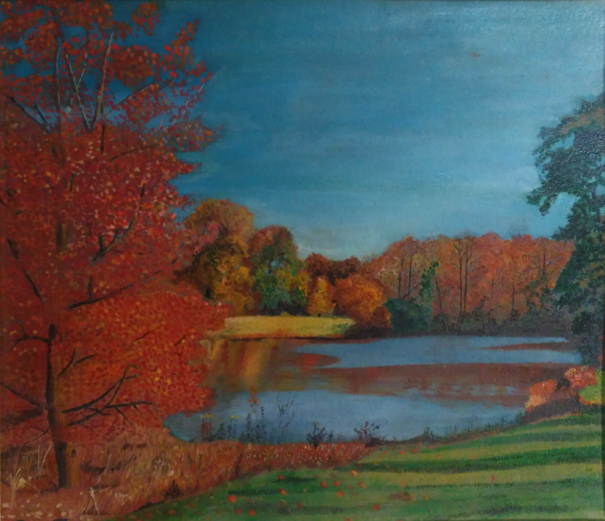

Тихо в озере струится Отблеск кровель золотых, Много в озеро глядится Достославностей былых. Жизнь играет, солнце греет, Но под нею и под ним Здесь былое чудно веет Обаянием своим. Солнце светит золотое, Блещут озера струи... Здесь великое былое Словно дышит в забытьи; Дремлет сладко, беззаботно, Не смущая дивных снов И тревогой мимолетной Лебединых голосов... Тютчев Ф.